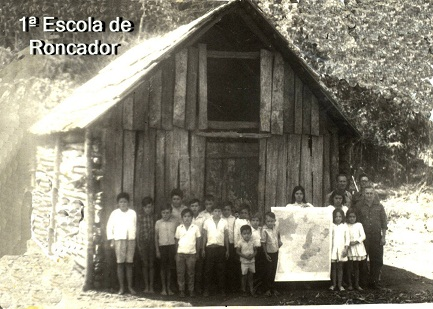

RONCADOR
Por volta de 1920, uma comissão exploradora encarregada de demarcar a estrada que faria a ligação do Paraná ao Mato Grosso, instalou um acampamento onde hoje se localiza a sede do município de Roncador. Com a derrubada das matas, foram surgindo as primeiras plantações, como também as criações de suínos.
Dizem os pioneiros que em uma noite chuvosa ouvia-se ao longe o barulho produzido pelas copas dos pinheiros, e também um forte ronco produzido por uma queda D'água. O barulho era ouvido a quilômetros e, desta forma, denominaram o rio de Roncador e futuramente o nome da cidade passou a ser "RONCADOR".
A colonização de Roncador iniciou-se em 1923, com a chegada das primeiras famílias. Em 1927, foi construída a primeira estrada para carroças. Devido ao crescimento do vilarejo, em 1952, a congregação das irmãs Servas da Imaculada Virgem Maria abriu uma escola, cuja construção contou com ajuda de toda população.


Curiosidades sobre Roncador:
- Origem e Primeiros Habitantes: A região já era frequentada por volta de 1920.
- Colonização (1923-1927): O início efetivo foi em 1923.
- Nomeação de Professores: Paulo Schneer foi o primeiro professor; Verônica Zola foi nomeada em 1944.
- Fundação/Emancipação: Oficialmente fundada como município em 1960.
- População Atual: Aproximadamente 11.300 habitantes.
O QUE FAZER EM RONCADOR?
- Natureza e Aventura:
- Cachoeiras: Sassá, Rio Bonito e do Roncador.
- Caminhadas da Natureza: Eventos que exploram o Rio Roncador.
- Pedal dos Mestres: Trilha de bike de alta dificuldade.
- Lazer e Turismo Rural:
- Pousada Parque das Gabirobas e Lago Municipal.
- Turismo Religioso: Igreja de São Pedro e São Nicolau.
- Cultura e Gastronomia:
- Culinária Típica: Degustar o perohê ou vareneky (herança ucraniana).
- Eventos: Celebrações do CTG e Associação Vesná.
- Onde Ficar e Comer:
- Hospedagem: Novo Hotel e Pousada das Gabirobas.
- Restaurantes: Maestá Wine Bar, Santa Gula e O Bistekão.
Vídeo sobre a história de Roncador:
| Prefeitura Municipal de Roncador | |
|---|---|
| Horário de Atendimento: |
Manhã: 8:00h às 11:45h Tarde: 13:15h às 17:30h |
| Local: | Praça Moysés Lupion, 89 - Centro CEP: 87320-000 |
| Ouvidoria: | 0800 115 0015 |
| E-mail: | ouvidoria@roncador.pr.gov.br |
Se você tiber algum fato interessante sobre o munícipio, conte aqui!
(Espaço opcional para compartilhar fatos, memórias ou curiosidades sobre o município)